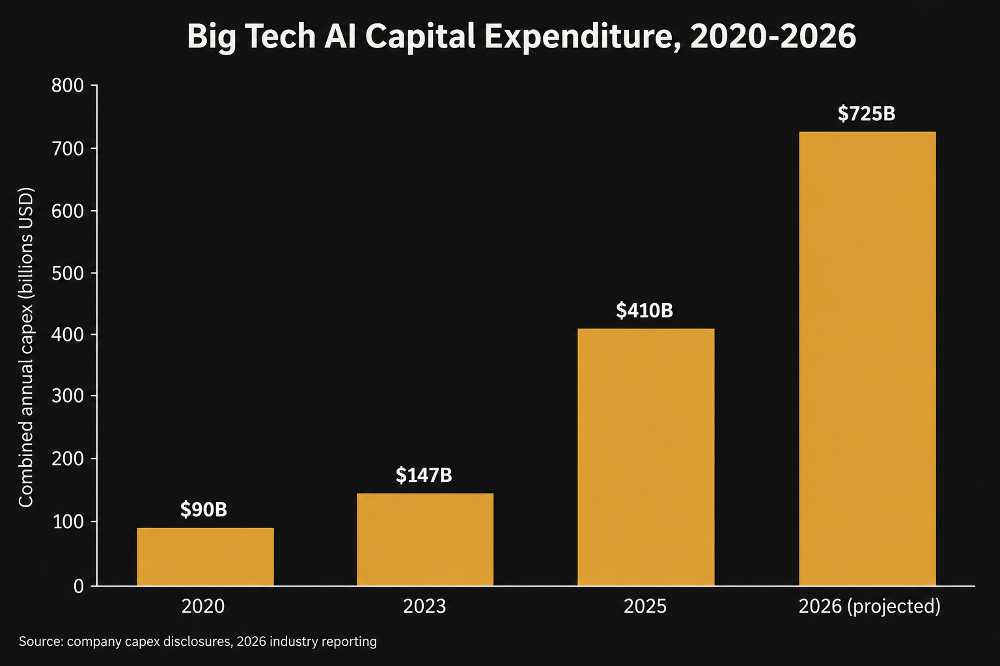
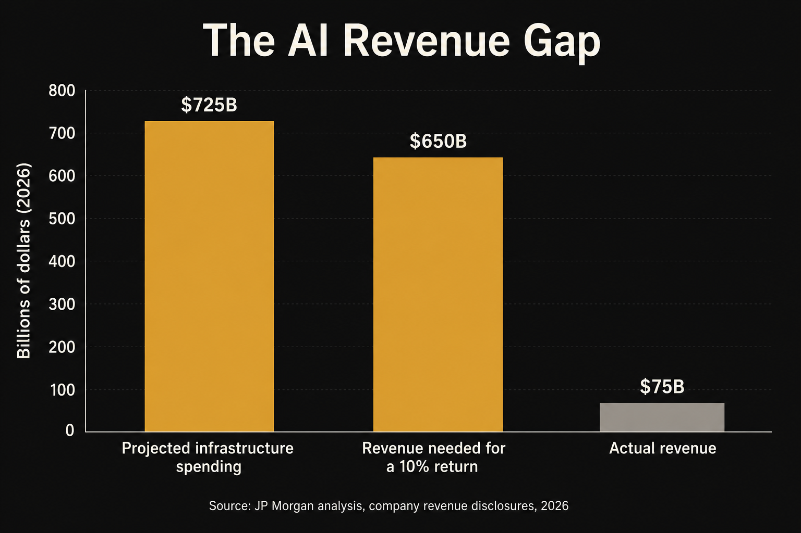
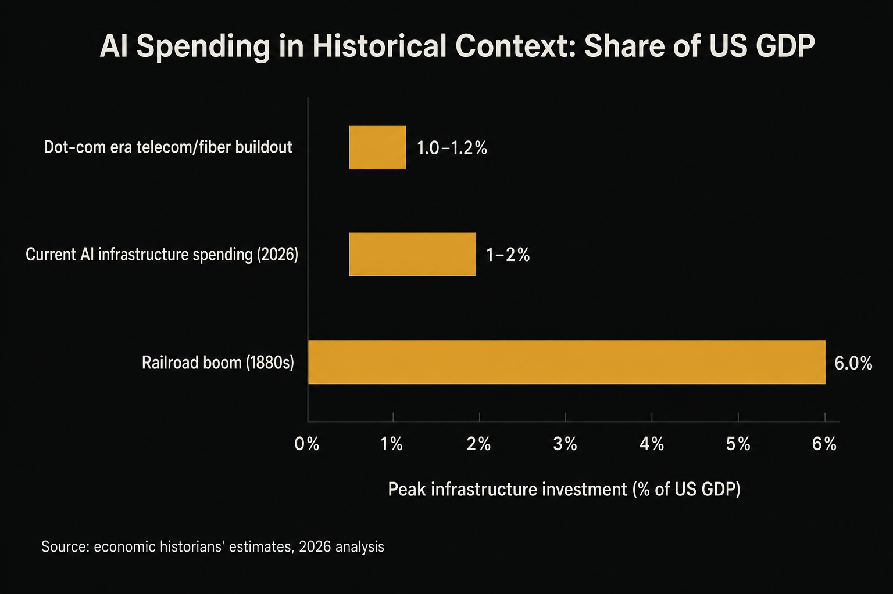

Nobody serious argues that artificial intelligence works. The argument is whether anyone is going to get paid for it. That distinction sounds small. It is currently worth about a trillion dollars a year in infrastructure spending, and in June 2026 it started showing up in places that have nothing to do with AI at all, like the price of a laptop.
On June 5, Nvidia lost roughly 320 billion dollars of market value in a single trading day, falling back below the 5 trillion dollar mark it had only just crossed. Three weeks later, Apple raised prices on MacBooks and iPads by as much as 20 percent, in the middle of a product year, something it had never done before in its history, and said plainly it could no longer absorb the rising cost of the chips going into its own hardware. Two of the most dominant companies on earth sent the same signal in the same month. I build software for a living, or I will soon, and every project I have shipped this year quietly assumed the ground underneath it would stay cheap: cheap compute, cheap memory, cheap AI. That assumption is exactly what these two headlines are calling into question.
What the spending looks like from the inside
In 2020, before ChatGPT existed, Amazon, Meta, Google, and Microsoft together spent about 90 billion dollars on capital expenditure. This year, combined spending across those four companies is projected near 725 billion dollars. That is not steady growth. That is an eightfold jump in six years, and almost all of it is infrastructure built for one bet: that the world will need vastly more AI compute than currently exists.

Picture what that money buys: a windowless industrial building holding tens of thousands of Nvidia GPUs, each chip priced at 30 to 40 thousand dollars. A large facility can hold 100,000 of them, putting the chips alone at 3 to 4 billion dollars before cooling, power, and networking get added. One building, ground up, can run 10 to 25 billion dollars. Big tech's capital spending is on pace to consume around 94 percent of operating cash flow over the next two years, according to a PIMCO analysis, up from about 40 percent in 2023. Almost everything these companies earn is going straight back into building more.
Set against that, JP Morgan reportedly modeled what return this spending would need to generate to be justified, and landed on a simple bar. For a 10 percent return, the minimum any serious investor expects, the industry would need to bring in around 650 billion dollars a year. What it earns falls well short. OpenAI reportedly brings in around 25 billion dollars a year while losing about 14 billion. Add Anthropic and Gemini's revenue and the major labs combined land somewhere around 75 billion, against a 650 billion dollar bar and roughly 725 billion in spending. A 2025 MIT study analyzing over 300 real enterprise AI deployments found that 95 percent failed to produce any measurable financial return. Only about 5 percent showed real impact on the bottom line.

Money that never leaves the room
One piece of this story gets skipped past in most coverage, and it is the piece that convinced me this is more than a spending question. A large share of the capital funding this buildout never leaves a small circle of companies. It moves from one balance sheet to another, and each stop along the way gets booked as revenue somewhere.
OpenAI announced in its own release that it had raised 122 billion dollars to fund the next phase of its buildout, the largest private funding round in history, anchored by 50 billion dollars from Amazon and 30 billion each from Nvidia and SoftBank. Nvidia is, at the same time, OpenAI's largest chip supplier. Oracle has committed roughly 300 billion dollars in compute capacity to OpenAI over five years, money it is raising in part through 45 to 50 billion dollars of new debt and equity financing this year alone, and Oracle then spends a meaningful share of that capital buying the chips it needs from Nvidia to fulfill the contract. Microsoft and Nvidia together put roughly 15 billion dollars into Anthropic, which is expected to spend around 30 billion dollars back on Microsoft's cloud and Nvidia's chips. The dollar does not really leave the room. It just gets counted again on its way past.
SoftBank's position shows what this looks like when it goes wrong for one company specifically. To fund its first major stake in OpenAI, SoftBank sold off its entire holding in Nvidia. To fund a follow-on 30 billion dollar investment this March, it took out a 40 billion dollar bridge loan, its largest dollar-denominated borrowing ever, and credit rating agencies downgraded its outlook to negative shortly after. In April, it went looking for an additional 10 billion dollar loan, this time using its own OpenAI shares as collateral. Then in late June, reports that OpenAI might delay its IPO to 2027 wiped out roughly 38 billion dollars of SoftBank's market value in a single trading session, since the entire structure depends on that IPO eventually happening to give the debt somewhere to be repaid from. This doesn't prove AI has no value, but it does mean a meaningful share of the boom's apparent size is leverage stacked on leverage, arranged among a small number of counterparties who all need each other's bet to keep paying off.
The number that puts this in real historical context
The most useful comparison I found is also more precise than "this feels like the dot-com bubble." Current AI infrastructure spending sits at roughly 1 to 2 percent of US GDP, depending on how you measure it. The railroad boom of the 1880s peaked at around 6 percent of GDP. The telecom and fiber optic buildout of the dot-com era topped out around 1 to 1.2 percent. That means AI spending has already matched or slightly exceeded the entire scale of the dot-com infrastructure boom, while still climbing, and it is roughly a third of the way to railroad-scale mania if the current growth rate continues.

A historian who spent years researching the 1873 railroad crash for his own book published a piece this year saying the AI buildout genuinely frightens him, for exactly this reason. Scale like this can end badly without any fraud or stupidity involved, just revenue arriving later than the spending did.
Skepticism used to come from outside the industry. It doesn't anymore.
For most of this boom, the loudest doubts came from short sellers with an obvious financial incentive to talk the market down. Michael Burry, who became known for his bet against housing in 2008, has disclosed put options against Nvidia and Palantir worth hundreds of millions of dollars combined, and has since shorted several other chip names directly. That is easy to dismiss as one contrarian doing what contrarians do.
By mid-2026 though, the skepticism started coming from inside the industry itself, which is harder to wave off. Capital Economics analysts, not short sellers, said AI spending shows many of the hallmarks of a bubble, while allowing that it could keep inflating for a while yet. A fund manager quoted in Fortune declined to call it a bubble outright, saying only three of the four conditions he uses to define one had been met, a more careful position than either side usually offers. The Bank for International Settlements issued a formal warning about how much of this capex is now debt financed. A draft US Treasury report reportedly modeled what happens to the wider economy if AI spending mirrors the dot-com collapse. These are the institutions that sit closest to the money, not outsiders betting against the industry for profit, and their tone has shifted from curiosity to caution in the space of a single year.
Why I am not calling this a repeat
It would be too easy to stop there and declare history simply repeating itself, so the real differences deserve equal weight. The telecom companies of the 1990s were funded mostly by debt while losing money every year. Nvidia posted over 100 billion dollars in net income last year alone, and Microsoft, Google, and Amazon are among the most profitable companies that have ever existed. Anyone claiming total certainty that this is definitely a bubble, or definitely not one, is ignoring exactly the part that makes this genuinely hard to call.
Why I actually care about this
I teach Python to students here in Lahore, some of whom are building their first real projects on top of a Gemini or Claude API key, the same way I do. None of us are paying anything close to the real infrastructure cost of what we're using. This is not an abstract concern for people in this part of the world either. Infosys, one of India's largest IT employers, has estimated that generative AI could displace as many as 92 million roles like front-end development and testing, while creating roughly 170 million new ones elsewhere in the system. Whether that transition nets out well depends entirely on which side of it a given person lands on, and for a lot of entry-level developers across South Asia right now, it does not feel like a wash.
There is a second habit worth carrying out of all this, and it has nothing to do with money. AI has made it far easier to produce something that looks finished long before it is one. I built a small project earlier this year specifically to make that point, a dashboard designed to look like a sophisticated AI system while doing nothing at all underneath it. It was a joke, but a pointed one, aimed at how much of what circulates on LinkedIn and YouTube right now is exactly that kind of surface without a system behind it.
The chess habit applies here too. You do not get credit for a position that looks strong if it collapses two moves later. Whatever happens to this capital cycle, the only thing that survives it is something that actually works when someone other than its creator tries to use it.
AI is probably going to matter for a very long time. That has never been the same question as whether every dollar riding on it right now, and every dollar riding on top of that dollar, gets paid back on schedule. Right now, only one of those two questions has an answer.
Sources & Further Reading
- CNN Business, Apple hikes the prices of MacBooks and iPads because of memory chip shortage
- CNBC, Apple posts worst day in over a year after MacBook and iPad price hikes
- Fortune, MIT report: 95% of generative AI pilots at companies are failing
- CryptoBriefing, Nvidia falls below $5T market cap after single-day wipeout erases $320B
- OpenAI, OpenAI raises $122 billion to accelerate the next phase of AI
- Bloomberg, A Guide to the Circular Deals Underpinning the AI Boom
- Bloomberg, SoftBank Secures Record $40 Billion Bridge Loan for OpenAI Stake
- Fortune, I won a Pulitzer for explaining the Great Depression. The AI spending boom terrifies me
- Think School, The Dirty AI Lie: How the GREATEST Bet in Human History Started to Crack in June 2026?